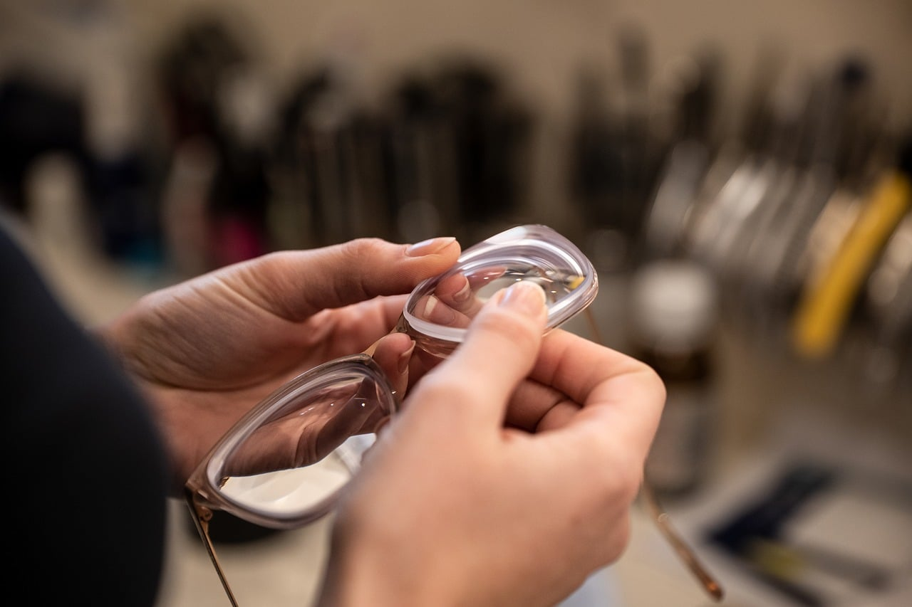
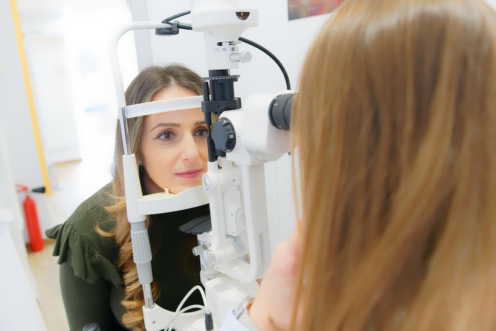
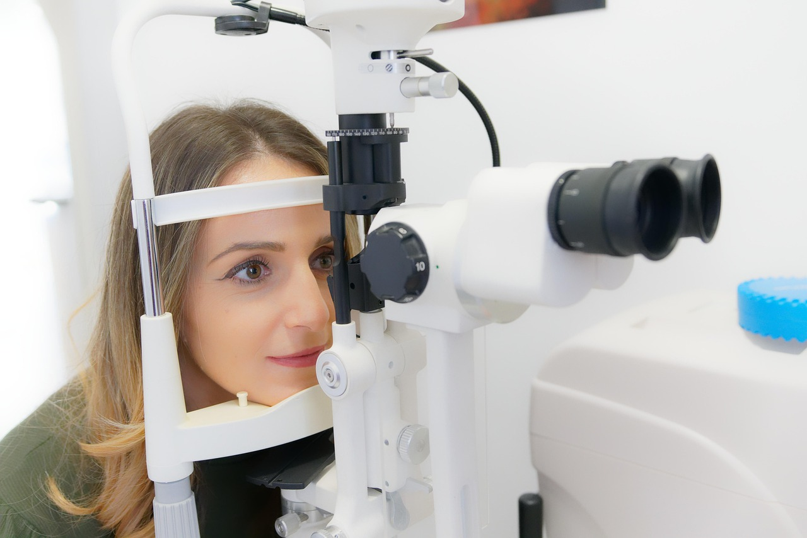
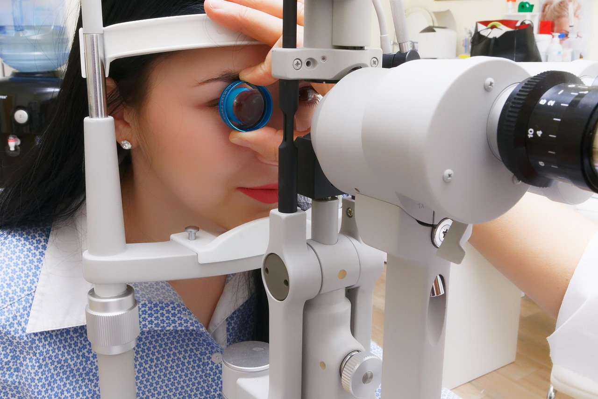

Optică medicală în Constanța
YZA optic
Vezi lumea clar, zi de zi.
Consultații optometrice, ochelari de vedere și de soare, lentile de contact și reparații rapide, toate într-un singur loc.
Program: luni–joi 09:00–18:00

Te ajutăm să vezi mai bine
La YZA optic primești consultații de specialitate și găsești o gamă variată de ochelari de calitate.
Ai nevoie de ochelari de vedere, de lentile de contact sau de o reparație? Echipa noastră te așteaptă cu soluții potrivite pentru tine. Împreună găsim cea mai bună variantă pentru sănătatea ochilor tăi.

-
Consultații precise
Echipamente moderne și atenție la fiecare detaliu.
-
Servire rapidă
Ochelarii tăi sunt gata într-un timp scurt.
-
Personal dedicat
Sfaturi adaptate fiecărui client, fără grabă.
Cum decurge vizita ta
De la programare până pleci cu ochelarii pe nas, știi tot timpul ce urmează.
-
Te programezi
Ne scrii pe WhatsApp sau ne suni și alegem împreună ora care îți convine.
-
Îți măsurăm vederea
La consultația optometrică verificăm cât de bine vezi și îți scriem prescripția.
-
Alegi rama și lentilele
Te ajutăm să găsești rama potrivită și lentilele de care ai nevoie, inclusiv de contact.
-
Pleci cu ochelarii pe nas
Ajustăm rama ca să stea bine. Pentru reglaje sau piese noi, revii oricând în program.
-
Consultație optometrică
Măsurarea vederii și prescrierea ochelarilor.
-
Ochelari de vedere
Rame moderne și lentile de calitate superioară.
-
Lentile de contact
O varietate de modele și mărci, ca să o alegi pe cea potrivită.
-
Reparații rapide
Ajustări și schimbare de piese pentru ochelari.
-
Ochelari de soare
Protecție UV și un design pe care îl porți cu plăcere.
În cabinet
Fotografii ilustrative



Hai la o consultație
Sună-ne sau scrie-ne pe WhatsApp și stabilim ora vizitei.
0737 253 087Program de lucru
| Luni | 09:00–18:00 |
|---|---|
| Marți | 09:00–18:00 |
| Miercuri | 09:00–18:00 |
| Joi | 09:00–18:00 |
| Vineri | 09:00–17:00 |
| Sâmbătă | 08:30–12:30 |
Parcare ușoară
Poți parca în apropierea magazinului, fără bătăi de cap.